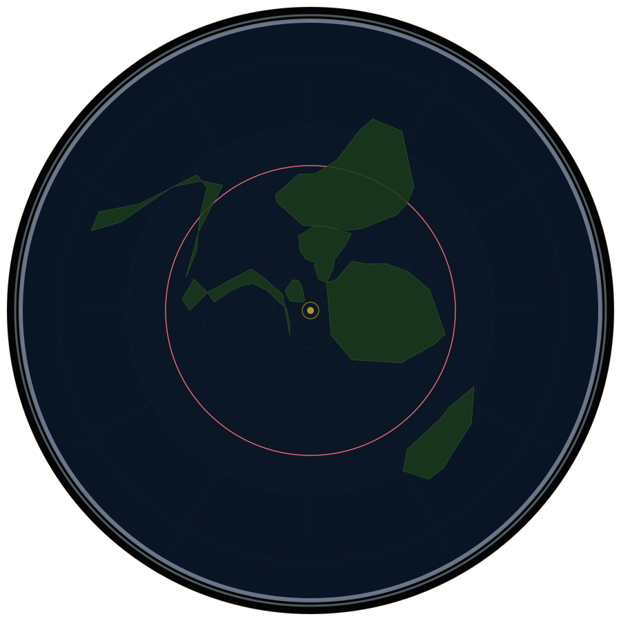

Structural Rings
The concentric circles that define the flat earth's architectureThe North Pole — Dead Centre
The geometric and cosmological centre of the entire flat plane. Polaris sits directly above it, stationary for every observer on Earth — impossible on a spinning globe, certain on a fixed flat disc.
◎ Image centre · 90°N · All meridiansThe Arctic Circle
The innermost habitable cold zone. Midnight sun and polar night are fully explained by the sun's local circuit above the plane — not axial tilt. The sun simply never leaves this zone in summer.
◎ Inner ring · ~66°N equivalentTropic of Cancer
The northernmost circle the sun reaches in its annual spiral. The midsummer solstice track. Beyond this ring the days grow shorter as the sun spirals southward and its circuit widens.
◎ Inner-mid ring · ~23°N equivalentThe Equatorial Ring
The midpoint of the flat disc — equidistant between the North Pole centre and the Antarctic Ice Wall outer boundary. At equinox the sun travels this ring, producing equal day and night for all latitudes simultaneously.
◎ Mid-disc ring · True equatorTropic of Capricorn
The southernmost circle the sun's path reaches. Midwinter for northern lands. The sun's circuit is at its widest here — longer days for observers on the outer arc, shorter for those near centre.
◎ Outer-mid ring · ~23°S equivalentThe Antarctic Ice Wall
A vertical ice cliff 150–200 ft high encircling the entire known world. James Clark Ross documented it in 1841. The 1959 Antarctic Treaty (56 signatories) prohibits independent civilian access. No one has independently verified what lies beyond.
◎ Outer boundary ring · All longitudesMajor Landmasses
Continents and islands fanning outward from the North PoleNorth America
Upper-left quadrant of the flat map. The Rocky Mountains, Great Plains, and Eastern seaboard align correctly under the azimuthal projection. Major HAARP and deep state infrastructure concentrated in the interior and Alaska arcs.
◎ Upper-left quadrantGreenland
On a Mercator globe map, Greenland appears the same size as Africa. On the flat azimuthal map its true proportional size is restored — smaller than South America. The globe projection deliberately distorted northern landmasses.
◎ Upper-left, close to centreSouth America
Lower-left quadrant. The Amazon drainage basin radiates outward toward the outer ice zone — consistent with flat-plane centrifugal hydrology. Flight route anomalies from South America to Africa and Australia expose the globe model's geometry.
◎ Lower-left quadrantEurope
Upper-centre cluster. The densest concentration of Freemasonic architecture, obelisks, and occult city layouts on the flat map. The Vatican, the City of London, and Paris form the three primary control nodes of the western arc.
◎ Upper-centre (slightly right)The British Isles
London — financial capital of the world's control system. The City of London (one square mile) is a sovereign jurisdiction inside the UK with its own laws. The Greenwich Meridian as Prime Meridian was chosen by the banking dynasties who dominated the 1884 International Meridian Conference.
◎ Upper-centreAfrica
The most geographically centred landmass on the flat map. Its position at the intersection of all major arc paths places it at the functional crossroads of the known world. Contains the Nile — the river that flows "uphill" in globe terms but downhill on the flat plane.
◎ Right-centreThe Arabian Peninsula
Jerusalem, Mecca, and the Nile cradle all cluster within this zone. The geographic land gateway between the African, European, and Asian arcs. Three of the world's major religions converge here — each pointing to this zone as sacred centre.
◎ Right-centre arc junctionRussia / Siberia
Enormous upper-right arc. Largest single land area on the flat map. Contains HAARP-equivalent scalar weapon installations across the Siberian interior — including the Sura Ionospheric Heating Facility, the Russian equivalent of HAARP.
◎ Upper-right — vast arcCentral Asia / Tibet
The world's highest plateau — the "roof of the world." In flat earth terms, the highest surface point on the plane, the closest land to the underside of the firmament dome. The Tibetan tradition preserved cosmological knowledge that Western academia has never assimilated.
◎ Right-upper mid-arcIndia
The Vedic tradition preserved the most accurate pre-suppression cosmological knowledge, including descriptions of enclosed sky, vimanas (flying craft), and a flat, supported earth. Sanskrit texts describe cosmological layers that map precisely to the flat earth model.
◎ Right-centre arcChina / East Asia
China's ancient Gai Tian cosmological model described a square earth under a round sky — an enclosed, covered world. The modern Chinese social credit surveillance system is the template for the global smart-city control grid being deployed worldwide.
◎ Right side arcJapan
Island chain at the outer rightward arc. The Japanese word for horizon — chihei-sen — means "the line where land and sky meet" — a perspective description, not a curvature reference. Japan's ancient cosmology described a disc-world supported by pillars.
◎ Far right arcSoutheast Asia / Indonesia
The Ring of Fire arc — in flat earth terms, a fracture zone in the plane's outer crust near the equatorial ring where volcanic and seismic activity is concentrated. The 2004 Indian Ocean earthquake and tsunami originated here — the largest seismic event in modern recorded history.
◎ Right-lower arcAustralia
The most anomalous continent for globe flight paths. Sydney–Santiago, Sydney–Dubai, and Sydney–Johannesburg routes are all geometrically impossible on a globe but perfectly arc-sensible on the flat map. Pine Gap (classified CIA facility) sits in its interior.
◎ Right-lower arcNew Zealand
The southernmost inhabited point of the flat disc before the outer ice zones begin. Its geographic isolation — and its emergence as a test case for the Great Reset (cashless society, biosecurity state) — positions it as a key cabal policy laboratory.
◎ Far right-lower arcPacific Islands / Hawaii
Hawaii sits at the precise midpoint between the North American and Asian arcs on the flat azimuthal map — as expected geometrically. The Pacific Military Command is based here, at the dead centre of the Pacific arc's strategic radius.
◎ Centre-lower, Pacific arcCaribbean Islands
The Bermuda Triangle sits within this zone — a region of documented navigation and communication anomalies. The Caribbean is also the geographic location of Epstein's Island (Little Saint James) and surrounding infrastructure linked to the intelligence-network trafficking operation.
◎ Left-centre arcAntarctica (The Ice Ring)
Not a continent at the bottom of a globe. A continuous ring of ice of unknown depth and width forming the outer boundary of the known world. Explorer accounts describe an insurmountable wall of ice — not a traversable continent with a geographic south pole.
◎ Outer rim — all arcsOceans & Seas
Water bodies whose behaviour confirms flat-plane hydrologyPacific Ocean
The globe convention of a single unified Pacific is an artefact of Mercator projection. On the flat azimuthal map, the Pacific splits across both the leftmost and rightmost edges — two arcs of the same body. This split is why trans-Pacific flight routes behave unexpectedly.
◎ Left and right outer arcsAtlantic Ocean
The central oceanic corridor on the flat map — the primary navigational highway between the European and American arcs. Its relatively narrow width on the flat map explains why early navigators could cross it in weeks without magnetic compass anomalies.
◎ Central corridorIndian Ocean
The outward-spreading ocean between the African and Australian arcs. Its currents radiate toward the outer boundary — consistent with flat-plane water flowing outward from the centre. The Indian Ocean is the primary bottleneck for global shipping.
◎ Right-lower arc spaceArctic Ocean
Small, near the centre of the flat disc, directly below the sun's winter circuit path. Its shallow, frozen nature is consistent with the flat model's inner zones receiving less solar energy as the sun's circuit widens southward in winter.
◎ Inner zone — around North PoleMediterranean Sea
The Roman lake — an enclosed, nearly non-tidal sea at the centre of the ancient world's civilisation cluster. Its enclosed nature and minimal tidal range (unlike open oceans) are more consistent with a contained flat-plane water body than an oceanic extension.
◎ Centre-upper arc — Europe/AfricaRed Sea
The parting of the Red Sea in Exodus is fully consistent with a flat-plane, shallow-sea wind-tide event. Its perfectly straight channel orientation is noted by flat earth cartographers as consistent with the radial geography of the flat disc.
◎ Right-centre arc — Egypt/ArabiaPersian Gulf
The oil-rich shallow sea whose control underpins the entire petrodollar system. Its geographic position on the flat map — between the African, Arabian, and Asian arcs — made it the strategic prize of 20th-century imperial competition.
◎ Right-centre arcCaspian Sea
The world's largest enclosed body of water — entirely landlocked, no tidal influence, no oceanic connection. Its flat, level surface confirms flat-plane hydrology. The globe model offers no explanation for why the world's largest lake has no connection to any ocean.
◎ Right-upper arc — Central AsiaDead Sea
The lowest point on the flat plane's surface — 430m below the surrounding plain. Water flows down to it from the Jordan River and evaporates. No outlet. Its perfectly flat surface is the lowest confirmed level reference point on the known world.
◎ Right-centre arc — Israel/JordanBlack Sea
Another nearly enclosed basin with minimal tidal activity. Ancient flood legends from every surrounding culture — Sumerian, Greek, Hebrew, and Anatolian — describe a catastrophic filling event consistent with a flat-plane basin breach.
◎ Upper-right arc junctionSouth China Sea
The disputed zone at the intersection of the Chinese and Pacific arcs on the flat map. China's aggressive territorial expansion here reflects an understanding of its strategic position as the gateway between the Asian arc and the right-side Pacific expanse.
◎ Right-lower arc junctionGulf of Mexico
The curved basin in the inner arc of North America. Its near-circular shape is consistent with an impact or structural feature of the flat plane. The 2010 Deepwater Horizon disaster occurred here — the largest accidental marine oil spill in history, in an area that flat earth researchers note for anomalous seabed geology.
◎ Left-centre arc — N. AmericaBay of Bengal
The inward-curving bay separating the Indian subcontinent from Southeast Asia. The 2004 Indian Ocean earthquake — the third largest ever recorded — originated beneath it. In flat earth terms, a fracture line in the outer-mid arc of the plane.
◎ Right-centre arcCaribbean Sea / Bermuda Triangle
The Bermuda Triangle (Miami–Bermuda–Puerto Rico) sits within this zone. Documented anomalous compass variation, navigation equipment failures, and unexplained disappearances of aircraft and vessels over decades — possibly a convergence zone for electromagnetic energy from the firmament above.
◎ Left-centre arcBering Sea / Strait
On the flat map, Alaska and Russia are neighbours across a narrow strait — not opposite sides of a globe. The Bering Land Bridge migration theory depends on globe geography. On the flat map, Alaska–Russia proximity makes cultural exchange a simple matter of crossing a channel.
◎ Upper arc — Alaska/Russia junctionKey Evidence Locations
Documented sites where flat earth physics has been physically testedThe Bedford Level, England
A 6-mile perfectly straight drainage canal in Cambridgeshire. Rowbotham's 1838 experiment showed a boat remaining fully visible at water level across the full 6 miles — no curvature observable. Reproduced dozens of times. The Royal Geographical Society's attempted debunking inadvertently confirmed the result.
◎ Upper-centre arc · Cambridgeshire, UKThe Suez Canal, Egypt
193.3 km long, built completely level with no curvature accommodation. At globe curvature rate (8 inches per mile²), the canal should drop 1,666 feet from end to end. Official British engineering specifications confirm: no curvature adjustment was made. The canal works perfectly at sea level its entire length.
◎ Right-centre arc · EgyptThe Panama Canal
82 km long, built entirely level. Official US Army Corps of Engineers documents confirm no curvature adjustment was required or made. The Gatun Lake section sits at 26m above sea level across its entire flat surface — confirming a level plane, not a curved surface.
◎ Left-centre arc · PanamaLake Pontchartrain Causeway, Louisiana
At 38.6 km, the longest continuous bridge over water in the world. Should show approximately 29m of curvature drop from centre to ends. Engineers confirm: no curvature allowance was made. The bridge is built perfectly level from shore to shore.
◎ Left-centre arc · Louisiana, USAChesapeake Bay Bridge-Tunnel, Virginia
37 km over open water. Should show ~27m of curvature. Laser measurements and photography confirm the full length is built level. The globe curvature calculation predicts a drop that is simply not there.
◎ Left-centre arc · Virginia, USATrans-Siberian Railway
9,289 km across Russia — the world's longest railway, built essentially level through the vast Siberian plain. At globe curvature, the track should drop thousands of metres from end to end. It does not. The engineering was performed on a flat surface.
◎ Upper-right arc · RussiaChicago Skyline from Lake Michigan
The Chicago skyline is regularly photographed from 60+ miles across Lake Michigan, showing the full base of skyscrapers at water level — buildings that should be 610m below the horizon on a globe. Multiple independent photographs from different observers, different conditions. Never explained by globe defenders.
◎ Left-centre arc · Lake Michigan, USAThe Nile River, Egypt
Flows northward for 6,650 km from its highland source in the East African Rift to the Mediterranean. On the globe model this means flowing "uphill" relative to Earth's alleged spherical geometry. On the flat plane it flows naturally downhill from an elevated inland source toward the sea.
◎ Right-centre arc · Egypt/Sudan/EthiopiaThe Amazon River, South America
Drains a continent in a radial pattern perfectly consistent with flat-plane drainage toward a lower perimeter. The Amazon basin's near-perfect flatness — less than 100m total elevation change across 3,000 km — is a defining exhibit for flat-surface hydrology.
◎ Lower-left arc · BrazilThe Maldives
A nation of islands averaging 1.2m above sea level with a perfectly flat ocean surface visible in all directions. The claim that the Maldives are "sinking" due to climate change is contradicted by tide gauge records showing no net sea level rise relative to the islands over the measurement period.
◎ Right arc · Indian OceanLake Titicaca, Peru / Bolivia
3,800m above sea level — the world's highest navigable body of water. Its surface is perfectly flat across its entire 8,372 km² expanse. An enormous flat water surface at altitude, confirming that flat-plane hydrology applies even to elevated bodies of water far from sea level.
◎ Lower-left arc · Peru/BoliviaCelestial & Cosmological Reference Points
Features corresponding to the sun's circuit, the firmament, and cosmic structureThe Sun's Northern Circuit Path
The circle traced by the sun 3,000 miles above the flat plane at midsummer — near the Tropic of Cancer ring. The sun spirals outward from here as summer ends, explaining the shortening days without requiring axial tilt or orbital ellipses.
◎ Inner-mid ring circuitThe Sun's Southern Circuit Path
The circle traced at midwinter — near the Tropic of Capricorn ring. The sun's circuit is at its widest here, meaning sunrise and sunset happen at wider azimuth angles. This explains winter's shorter days for northern observers: the sun is circling further away.
◎ Outer-mid ring circuitThe Equatorial Sun Path
The intermediate solar circuit at the spring and autumn equinoxes — directly over the equatorial ring. Produces equal day and night for all observers simultaneously, which is geometrically consistent with the flat azimuthal model but presents calculation difficulties on the globe model.
◎ Mid-disc circuitPolaris — The Fixed North Star
Positioned directly above the North Pole at all times from all northern latitudes. Every star in the sky rotates around Polaris in perfect concentric circles. The angular elevation of Polaris above the horizon equals your latitude precisely — confirming the geometry of a flat disc with a centre-point above.
◎ Directly above map centre — all timesThe Southern Cross Constellation Zone
Visible simultaneously from the entire southern arc of the flat disc. On a globe, observers in widely separated southern locations should have their view blocked by curvature. The simultaneous visibility of the Southern Cross across all southern longitudes is consistent with stars affixed to the interior of the firmament dome.
◎ Visible from outer southern arcAurora Borealis Zone
The northern lights occur near the inner Arctic Circle arc — electrical discharges at the inner edge of the firmament dome where it meets the plane. Ancient Norse, Sámi, and Indigenous Alaskan traditions consistently described the aurora as a boundary phenomenon, not a random atmospheric event.
◎ Inner arctic zone — circular bandAurora Australis Zone
Southern lights occur near the outer Antarctic arc — electrical discharges at the outer dome edge. Both auroras follow circular paths perfectly consistent with a dome structure. The globe model cannot explain why auroras form in consistent circular bands — the flat firmament dome model predicts exactly this pattern.
◎ Outer ice ring zone — circular bandThe Firmament Dome
The solid crystalline vault above the flat plane — not visible on the surface map but implied by the behaviour of all celestial objects. The Hebrew raqia, Greek stereoma, Sumerian heaven-vault, and Egyptian nut all describe the same structure. Stars, sun, and moon all move within it. Nothing passes through it.
◎ Above entire map — all locationsThe Waters Above the Firmament
The reservoir of water above the dome — described in Genesis 1:6-7, in Vedic cosmology, and in the traditions of over 200 indigenous cultures worldwide. Responsible for the sky's distinctive blue and the source of the biblical Flood. The Schumann resonance — the electromagnetic resonance of the space between Earth and firmament — was predicted by Tesla and detected by Schumann in 1952.
◎ Beyond firmament — above allSuppressed & Classified Locations
Military installations, treaty zones, and restricted access sitesMcMurdo Station, Antarctica
The largest Antarctic research station — the primary gateway through which all Antarctic access is controlled. Independent researchers approaching without official sanctioning are intercepted and turned back. What McMurdo actually studies has never been publicly disclosed in full. The US military maintains a permanent armed presence.
◎ Outer ring — Ross Ice ShelfAmundsen-Scott South Pole Station
Located at the alleged geographic South Pole. In flat earth terms, there is no South Pole — this station is positioned somewhere on the inner face of the Antarctic Ice Wall ring. Its true location relative to the flat plane's geometry has never been independently verified. Access requires full government authorisation.
◎ Outer ring — claimed pole positionHAARP — Gakona, Alaska
The High-frequency Active Auroral Research Programme. 3.6 MW ionospheric heater officially for atmospheric research. The European Parliament called for an international ban in 1999. Can heat the ionosphere — the underside of the firmament dome — to produce weather modification, communication disruption, and electromagnetic pulse effects at range.
◎ Upper-left arc · Alaska, USAPine Gap, Australia
Jointly operated CIA/ASD facility in the central Australian desert. Officially a satellite ground control station — but in a flat earth model with no orbiting satellites, it serves a different function: monitoring firmament-reflective electromagnetic signals and coordinating the southern hemisphere surveillance network.
◎ Right-lower arc · Central AustraliaArea 51, Nevada
The Tonopah test ranges and Groom Lake facilities. Home to reverse-engineered craft recovered from what are officially described as crashes but which flat earth researchers argue were discoveries of advanced technology originating from beyond the ice wall or from the firmament boundary itself.
◎ Left-centre arc · Nevada, USADiego Garcia, Indian Ocean
A remote British-American military base at the centre of the Indian Ocean arc — the most geographically isolated major military installation on the flat plane. Flight MH370 was last tracked heading toward Diego Garcia. The atoll's population was forcibly displaced in the 1960s by the British government to make way for the base.
◎ Right arc · Central Indian OceanRAF Menwith Hill, Yorkshire
The largest electronic monitoring station in the world. Part of the ECHELON Five Eyes global surveillance network. On the flat map it sits at the geometric communication hub between the American and European arcs — intercepting transatlantic communications at the nodal junction of the two major western arcs.
◎ Upper-centre arc · Yorkshire, UKSvalbard Global Seed Vault, Norway
Deep inside the Arctic Circle arc, accessible only by treaty-controlled travel. The elite's biological insurance policy — storing specimens of every food crop seed in the most controlled zone of the flat map. Funded by the Rockefeller Foundation, the Gates Foundation, and the Norwegian government. Built to survive "global catastrophe."
◎ Upper-centre arc · Svalbard, NorwayThe Strait of Gibraltar
The narrow gateway between the Atlantic and the Mediterranean — the choke point of the ancient world's trade and the western entrance to what the Romans called Mare Nostrum (Our Sea). The Rock of Gibraltar is one of the two mythological Pillars of Hercules — the boundary markers of the known ancient world.
◎ Centre arc · Europe/Africa junctionThe Antarctic Treaty Zone
Not a single location but the entire outer ring of the flat disc — the 56-nation military exclusion zone that prevents independent verification of what lies beyond the ice wall. Signed 1959. No public vote. No expiry. Every attempt to independently access Antarctica's true coastline has been intercepted or refused.
◎ Entire outer boundaryThe Outer Lands
What explorers and historical records suggest lies beyond the ice wallThe Antarctic Ice Wall — Inner Face
The vertical cliff of ice, 150–200 feet high, stretching beyond any ship's sight in either direction. First documented by James Clark Ross, 1841. Ross sailed east and west along its face for days without finding any gap. Its full extent has never been measured by any independent explorer.
◎ Outer boundary — inner faceBeyond the Wall — Admiral Byrd's Account
Admiral Richard Byrd's 1954 interview referenced "that enchanted continent in the sky, that land of everlasting mystery" — a description incompatible with the globe model of Antarctica. His Operation Highjump (1946–47) involved 4,700 men, 33 aircraft, and 13 ships — an extraordinary military force for a "scientific expedition."
◎ Beyond outer boundaryThe Piri Reis Map Evidence
The 1513 Piri Reis Map shows an Antarctic coastline in accurate detail 300 years before its official discovery (1820), and without the ice sheet — suggesting the map was compiled from much earlier source documents depicting the coastline before glaciation. Either pre-existing knowledge or access to regions officially unexplored.
◎ Outer boundary chartedSpeculation — Second Ring of Continents
Researchers studying the azimuthal projection at extended scales note that the known continental pattern could theoretically repeat — a second ring of landmasses further out, separated by a second body of water and a second ice ring. No confirmed evidence exists, but the possibility is consistent with the cosmological model.
◎ Beyond outer boundary — unknownThe Outer Waters
If the flat plane extends beyond the ice wall, a second expanse of ocean would lie beyond the boundary — consistent with the biblical description of waters surrounding and enclosing the known world. Scriptural references to the "sea of glass" and the "ocean that encircles all" point to this structure.
◎ Beyond outer boundaryTerra Australis Incognita
The "unknown southern land" appeared on European maps from the 1500s through the 1700s, drawn in considerable geographic detail before any confirmed southern hemisphere exploration. Cartographers from Ptolemy onward included it. Either it was drawn from pre-existing knowledge of what lies beyond the ice wall, or from exploration that was subsequently suppressed.
◎ Beyond outer boundary — historical mapsFlight Path Anomalies
Routes that are geometrically impossible on a globe — perfectly logical on the flat mapSydney → Santiago (Chile)
On a globe the shortest great circle route crosses directly over Antarctica. No airline flies this route. All Sydney–Santiago flights detour via Los Angeles — adding 6+ hours. On the flat azimuthal map, the Los Angeles arc IS the geometrically shortest path between Australia (right arc) and South America (left arc). The detour makes no sense on a globe. It is mandatory on the flat map.
◎ Right arc → Left arc · Trans-PacificCape Town → Sydney
Globe shortest route: directly east across the southern ocean (16 hours). Actual flights: via Dubai, Singapore, or Perth — heading northeast first and adding hours. On the flat map, South Africa (right-centre) to Australia (far right) requires travelling outward along the right arc — which is exactly northeast on the flat map. The globe route simply does not exist in practice.
◎ Right-centre → Right arcJohannesburg → Santiago
Should be a direct southern hemisphere route (8–9 hours) on a globe. No direct flight exists. All routes go via São Paulo, Atlanta, or London — adding 6–10 hours. On the flat map, Joburg (right arc) to Santiago (left arc) requires travelling inward toward the North Pole centre then outward to the left arc — consistent with the São Paulo routing.
◎ Right arc → Left arc · Via centreAuckland → Buenos Aires
One of the rare trans-southern routes that does exist. Should take approximately 10–11 hours on a globe. Takes 10–12 hours in practice. This is one of the few routes where globe and flat map arc predictions agree closely — providing a calibration point. The route exists; it is not the trans-southern anomaly routes that expose the lie.
◎ Far right → Lower left arcTokyo → London (Polar Route)
Takes approximately 12 hours flying northwest over Russia and Siberia. On the globe this requires flying over the top of the Earth. On the flat azimuthal map, Tokyo (right arc) to London (upper-centre) via the Russian upper arc is simply the shortest straight arc path — requiring no "over the top of a globe" explanation.
◎ Right arc → Upper-centre · Via RussiaLos Angeles → Dubai
On a globe the shortest western route crosses the Atlantic and Europe. Actual flights head northeast over Alaska and Russia — the "wrong" direction on a globe. On the flat map, going upper-left (Alaska) then across the Russian upper arc to Dubai (right-centre arc) is the correct and shortest path. Every polar route confirms the flat map geometry.
◎ Left arc → Upper arc → Right arcAnomalous Natural Features
Geographic features that defy globe explanation but confirm flat earth physicsThe Sahara Desert
The world's largest hot desert sits at the zone where the sun's local circuit passes directly overhead for the longest duration each year. Maximum solar energy at minimum atmospheric angle = maximum surface heating = desertification. No globe model orbital mechanics are required to explain the Sahara's position — only the flat earth sun circuit does so cleanly.
◎ Right-centre arc · North AfricaThe Himalayas / Tibetan Plateau
The highest surface feature on the flat plane. In flat earth terms, this represents the maximum upwelling of the plane itself — closest any land gets to the firmament above. The Tibetan plateau sits at an average of 4,500m elevation. Buddhist and Hindu cosmological traditions from this region describe the most accurate pre-suppression models of the enclosed universe.
◎ Right-upper arc · Central AsiaThe Mariana Trench
The deepest known point in the ocean — up to 11km below the surface in the Challenger Deep. On the flat plane this represents the deepest penetration into the "waters below" the disc — the primordial deep described in Genesis as the tehom. The trench's existence is consistent with a flat disc of significant thickness overlying a deeper oceanic basement.
◎ Right arc · Western PacificThe Great Barrier Reef
The world's largest living structure — 2,300 km long — parallels the Australian coastline along the flat map's outer right arc. Its formation pattern and orientation are consistent with the radial geography of the flat azimuthal map. The reef has been dying at the arc where the sun's local circuit passes closest to the Australian coastline in summer.
◎ Right arc · Queensland, AustraliaThe Bermuda Triangle
Located between Miami, Bermuda, and Puerto Rico in the western Atlantic. Documented anomalous compass variation, navigation equipment failures, and the disappearance of aircraft and vessels over decades — with no wreckage found. Possibly a convergence zone for electromagnetic energy channelled through or reflected by the firmament dome above.
◎ Left-centre arc · Western AtlanticThe Dragon's Triangle
The Pacific equivalent of the Bermuda Triangle — off the coast of Japan in the Philippine Sea. Same anomalous electromagnetic phenomena, same pattern of unexplained vessel and aircraft disappearances. If both are firmament energy convergence points, their opposing positions on the flat map's right arc and left arc mirror the bilateral symmetry of the disc structure.
◎ Right arc · Philippine SeaThe Congo Basin
Africa's second great river system — home to the world's deepest river (the Congo reaches 230m depth). Its drainage pattern is fully consistent with flat-plane hydrology radiating toward the outer boundary. The Congo Basin also contains the world's second-largest tropical rainforest, whose oxygen production makes it a global life-support system.
◎ Right-centre arc · Central AfricaThe Great Victoria Desert, Australia
An enormous flat, featureless desert in Australia's interior where Pine Gap — the classified CIA facility — is hidden. Its geographic isolation from population centres makes it ideal for operations requiring distance from civilian oversight. Laser ranging and interferometry experiments conducted from its flat surface consistently produce results inconsistent with globe curvature.
◎ Right-lower arc · Central AustraliaThe Tibetan Plateau Ice Caps
At 4,500m average elevation, Tibet's glaciers drain into all major Asian river systems — the Ganges, Brahmaputra, Yangtze, Mekong, Yellow River, and Irrawaddy. In flat earth terms, this is the elevated central dome of the Asian arc acting as the region's water tower, feeding the outward-flowing rivers of the continent.
◎ Right-upper arc · TibetDeath Valley, California
The lowest, hottest, driest place in North America — 86m below sea level. Consistent with flat earth solar circuit physics: when the sun's local path passes directly overhead at midsummer in this zone, maximum surface temperatures occur. Death Valley holds the world record for highest reliably recorded air temperature (56.7°C, 1913).
◎ Left-centre arc · California, USAThe Ganges Delta, Bangladesh
One of the world's most fertile and most densely populated flat plains — perfectly level for hundreds of miles. The delta of the Ganges and Brahmaputra rivers confirms flat-plane surface hydrology: multiple rivers spreading across a flat plain to the sea with no curvature observable across hundreds of kilometres of water surface.
◎ Right-centre arc · BangladeshAncient & Occult Significance
Places carrying suppressed historical, spiritual, or geometric significance on the flat mapGiza / Cairo, Egypt
The Great Pyramid complex sits within 1/60th of a degree of the geographic centre of all land mass on the flat plane — a placement geometrically impossible to achieve by accident, and impossible to know without a flat earth map. The Pyramid also encodes pi, phi, the speed of light in its dimensions, and the precession of the equinoxes in its orientation.
◎ Right-centre arc · EgyptJerusalem
Three of the world's dominant religions converge on a single point. Its position on the flat map sits at the land gateway between the African, European, and Asian arcs — the functional centre of the inhabited world on the azimuthal projection. On the flat map, Jerusalem is visually central in a way that the globe model obscures.
◎ Right-centre arc · IsraelVatican City, Rome
The spiritual capital of the institution that suppressed the flat earth model and imposed heliocentrism through the Inquisition. The Vatican's LUCIFER infrared telescope (Vatican Advanced Technology Telescope) is named explicitly. Vatican astronomers have issued statements preparing Catholics for "extraterrestrial life" disclosure.
◎ Upper-centre arc · ItalyWashington D.C.
The political capital of the control system. Its street layout — designed by Freemason Pierre Charles L'Enfant — forms an inverted pentagram pointing north toward the White House when viewed from above. The Washington Monument obelisk marks the centre. The Capitol building sits on Jenkins Hill, formerly called Rome — named by its developer.
◎ Left-centre arc · USALondon — The City of London
The financial capital — a one-square-mile independent state within Greater London, not subject to UK law, with its own police force and its own Lord Mayor. Home of the Bank of England, the Temple Bar (Templar gateway), and the financial mechanisms of the central banking cabal. The three City obelisks mark its territory.
◎ Upper-centre arc · EnglandStonehenge, England
Megalithic monument with precise astronomical alignments — tracking the sun's local circuit on the flat plane, not heliocentric orbital mechanics. The heel stone aligns with midsummer sunrise on the sun's northern circuit track. Built to a precision requiring knowledge of the actual path of the local sun above the flat disc.
◎ Upper-centre arc · Wiltshire, EnglandTeotihuacán, Mexico
The "City of the Gods" — whose pyramidal layout mirrors the Orion constellation, whose proportions encode the same mathematical constants as Giza, and whose original builders are unknown. The Avenue of the Dead aligns with the setting sun at specific times. Its construction predates the Aztec civilisation by centuries.
◎ Left-centre arc · MexicoAngkor Wat, Cambodia
The world's largest religious monument. Built with the same Fibonacci-encoded proportions as Giza and Teotihuacán. Faces precisely east — tracking the flat plane sun's equatorial circuit path at the equinoxes. The temple complex encodes the Hindu cosmological age cycles in its architectural dimensions.
◎ Right arc · CambodiaEaster Island, Pacific
The most remote inhabited island on the flat map — thousands of miles from any continent. The 887 Moai statues face inland, watching over the land. Their builders — the Rapa Nui — were allegedly decimated by European contact. The island's position at the extreme outer arc of the Pacific made it a natural observation and ceremony site for monitoring the sun's circuit at that longitude.
◎ Far left-lower arc · PacificGöbekli Tepe, Turkey
The world's oldest known megalithic structure at 12,000+ years — predating the standard archaeological timeline by 6,000 years and pushing back evidence of organised religion and astronomy before any known civilisation. Deliberately buried by its own builders. Its astronomical alignments track the flat plane sun and star circuits with precision matching modern instrumentation.
◎ Right-upper arc · Southeast TurkeyThe Nazca Lines, Peru
Enormous geoglyphs visible only from altitude, on the perfectly flat Nazca plateau of southern Peru. Their function remains officially unexplained. Flat earth interpretations: astronomical calendar markings for the local sun's circuit, landing indicators for craft operating above the flat plane, or communication patterns for entities operating at altitude above the firmament boundary.
◎ Lower-left arc · PeruMecca / The Kaaba, Saudi Arabia
Every Muslim on Earth faces this single point when praying — regardless of location. Over 1.8 billion people orient toward a single spot. On a globe this would require prayer directions curving around a spherical surface. On the flat azimuthal map, all prayer directions from all locations converge on a single point geometrically — exactly as Islam requires.
◎ Right-centre arc · Saudi Arabia